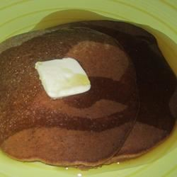

Fluffy Gingerbread Pancakes

Description
Fluffy pancakes with Gingerbread flavor perfect for
the holiday season.
Ingredients
- ¾ cup milk
- ½ cup cold brewed coffee
- ½ cup butter, melted and cooled to lukewarm
- 4 eggs
- 2 cups all-purpose flour
- 1 cup whole wheat flour
- 1⅛ cups light brown sugar
- 1½ teaspoons baking soda
- 1 tablespoon baking powder
- 1 teaspoon salt
- 1½ teaspoons ground cinnamon
- 1½ teaspoons ground ginger
- ¼ teaspoon ground nutmeg
- ⅛ teaspoon ground cloves
- cooking spray
Steps
- Whisk together the milk, coffee, butter, and
eggs in a bowl until evenly blended; set aside.
- In a large bowl, stir together the all-purpose
flour, whole wheat flour, sugar, baking soda,
baking powder, salt, cinnamon, ginger, nutmeg,
and cloves.
- Pour the egg mixture into the flour mixture, and
stir just until combined. Set aside for 10 to
15 minutes.
- Coat the bottom of a large skillet with cooking
spray, and place pan over medium heat.
- Scoop large spoonfuls of batter onto the hot pan,
and fry until bubbles appear on the surface.
- Flip and cook until browned on the other side.
- Continue with remaining batter.